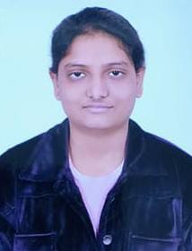

Kashivi Goel

Summary
I am Kashivi Goel currently enrolled in a full time BTech degree from IP university.
I have a keen interest towards technology and i am currently exploring different fields.
I am Currently learning Web development and DSA in java.
I hope to become an aspiring enginner with good problem solving skills.
Education
- Currently in BTech(1st year)
- 12 Class from CBSE(2023) - 84.2 %
- 10 Class from CBSE(2021) - 97.2 %
Experience
- As a member of the technical society at my college, Hash Define Organization, I am assigned daily coding questions and assignments which I approach with diligence and timeliness. I enjoy the challenges presented by these tasks and take pride in completing them to the best of my abilities because of which I was able to learn github and git.
- I was also a former member of Anveshan, another tech society at my college. Recently, I had the opportunity to manage a team during the society's hackathon event. The experience was incredibly rewarding, and I was impressed by the level of teamwork and collaboration displayed by my colleagues.
- I have also good communication skills, I went to a poem competition in English in my 12th grade which is a good experience.
Skills
Currently, I am in the process of acquiring proficiency in Python and Java programming languages. Additionally, I possess a basic understanding of Git and Web development, which I am currently refining through ongoing learning and practice.
Achievements
- Reliance foundation Scholorship Scholor
- During my 12th grade, I was honored with an academic achievement certificate by the school principal for my exceptional performance in academics.
- Got Directorate of Excellence Award in my 10th grade from the former education minister of Delhi Manish Sisodia and a scholarship of ₹5000 from the same.
Others
My hobbies
Contact Me